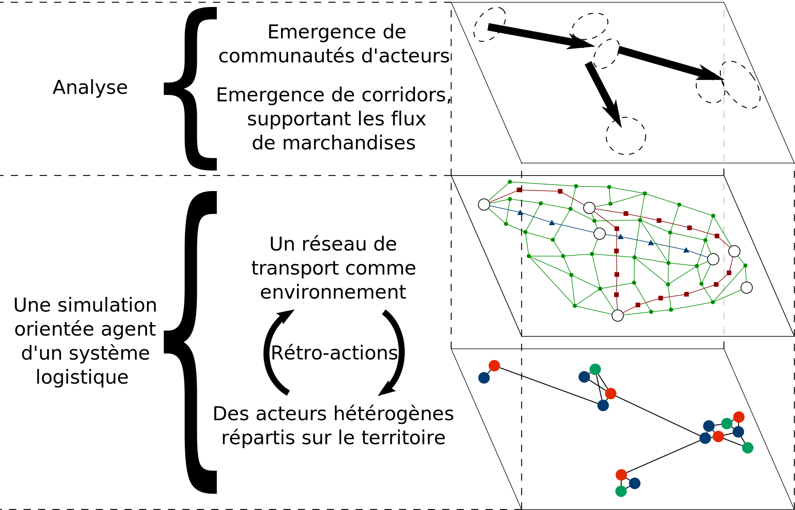
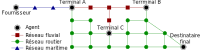
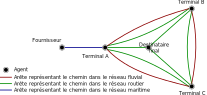

Thibaut Démare - LITIS
thibaut.demare@univ-lehavre.fr
thibaut.demare@univ-lehavre.fr
Modélisation d'un réseau de transport multi-modal dans un système logistique
Réunion d'équipe
Le Havre
11 Décembre 2018
Le Havre
11 Décembre 2018
Modélisation d'un réseau de transport multi-modal dans un système logistique
Thibaut Démare
Stefan Balev, Cyrille Bertelle, Antoine Dutot, Dominique Fournier and Eric Sanlaville
Normandie Université
LITIS
Réunion d'équipe
11 Décembre 2018
Plan
- Contexte et problématique
- Retour sur le modèle initial et son implémentation
- Modélisation du réseau de transport multi-modal
- Résultats préliminaires
Contexte et problématique
Présentation d'un système logistique
- C'est une composante essentielle d'un système spatial dans lequel les acteurs s'organisent autour d'infrastructures pour faire circuler des flux de marchandises, d'information et financier sur un territoire.
- Ces systèmes possèdent des nœuds d'accès par lesquels la marchandise entre ou sort.
- Des métropoles, ou aires urbaines, attirent et génèrent les flux.
- Le système subit plusieurs contraintes de nature différente (spatiale, économique, politique, ou écologique).
Une organisation distribuée du flux
Figure 1 : Chaque acteur est responsable d'une partie seulement du flux auto-organisé de marchandises. Leurs interactions et méthodes de travail permettent une organisation cohérente.
L'interface port-métropole
Figure 2 : L'interface qui connecte les logistiques portuaire et métropolitaine.
Problématique
- On cherche à comprendre, à de multiples échelles, comment des acteurs, autonomes et très hétérogènes, s'organisent collectivement autour des infrastructures à leurs dispositions pour gérer des flux soumis à un ensemble de contraintes.
- Nous proposons un modèle agent qui représente les propriétés, contraintes et comportements locaux d'un système logistique pour en reproduire le fonctionnement global grâce à la simulation.
- La simulation permet alors de tester différents scénarios pour comprendre comment des décisions locales impactent l'ensemble du système.
Retour sur le modèle initial et son implémentation
Une approche système complexe de la modélisation
- Un modèle multi-agent qui représente chaque acteur et infrastructure par une entité autonome et réactive.
- Ces agents ont des règles prédéfinies qui décrivent comment ils se comportent et interagissent entre eux en fonction de leurs perceptions de leur environnement et de leurs besoins.
- Un graphe dynamique représente le réseau de transport.
- On peut suivre le déplacement de chaque véhicule et observer l'évolution global du trafic.
- Et on peut modifier le graphe en temps réel.
Architecture générale

Figure 3 : Représentation générale du modèle
Figure 3 : Représentation générale du modèle
L'implémentation
- Nous avons implémenté le modèle au sein de la plateforme de simulation GAMA. Une étape de la simulation équivaut à une heure.
- Nous avons utilisé des données réelles sur l'axe Seine (environ 12 000 agents) afin de valider le modèle et d'effectuer de premières analyses.
- L'axe Seine étant majoritairement représenté par le mode routier (environ 90% du trafic s'effectue par la route), dans un premier temps nous n'avions pas implémenté d'autre mode de transport.
Les agents
Figure 4 : Les agents implémentés.
Impacts des stratégies de réapprovisionnement sur les ruptures de stock
Évolution du trafic dans un réseau dynamique
Modélisation du réseau de transport multi-modal
Les contraintes du multi-modal
- Lors d'un transport multi-modal, la marchandise doit passer par des nœuds intermédiaires du réseau pour changer de véhicules : il s'agit des terminaux.
- Cela implique des coûts supplémentaires (financiers ou temps).
- Les véhicules doivent avoir des capacités en fonction du réseau sur lequel ils se déplacent.
- Les infrastructures ont des capacités limités pour faire rentrer (ou sortir) des véhicules par unité de temps.
Les agents
Figure 5 : Les agents impliqués dans le multi-modal et leurs interactions.
Un réseau de transport multi-modal

Figure 6 : un réseau multi-modal tel qu'il pourrait être observé
Figure 6 : un réseau multi-modal tel qu'il pourrait être observé
Représentation du réseau multi-modal par le commissionnaire

Figure 7 : Représentation du réseau multi-modal par le commissionnaire
Figure 7 : Représentation du réseau multi-modal par le commissionnaire
Résultats préliminaires
Évolution du trafic
Figure 8 : Évolution du trafic suite à la mise en activité du canal Seine-Nord.
Part modal en fonction du canal Seine Nord
| Route | Fluvial | Maritime | |
|---|---|---|---|
| Part modal sur les 200 dernières étapes (Canal Seine-Nord non actif) |
84,5% | 11,5% | 4% |
| Part modal sur les 200 dernières étapes (Canal Seine-Nord actif) |
79% | 16,5% | 4,5% |
Conclusion
Pour résumer
- Nous avions proposé un modèle multi-agent et des graphes dynamiques pour représenter un système logistique.
- L'implémentation a été réalisé au sein de la plateforme de simulation GAMA et utilise des données sur l'axe Seine.
- Le modèle et son implémentation permettent d'observer les effets de paramètres locaux sur les propriétés macroscopiques.
- Nous avons ensuite amélioré le modèle pour que le réseau de transport soit un réseau multi-modal.
- Cela nous a conduit à développer de nouveaux agents, une nouvelle manière de représenter le réseau, ainsi qu'un algorithme de plus court chemin sur cette représentation.
Perspectives
- On souhaite surtout explorer les résultats que l'on peut désormais obtenir.
- Pour cela, on va tirer profit du serveur de calcul du LITIS sur lequel on peut exécuter jusqu'à 8 simulations en parallèle grâce à des containers Docker.
Merci pour votre attention
thibaut.demare@univ-lehavre.fr